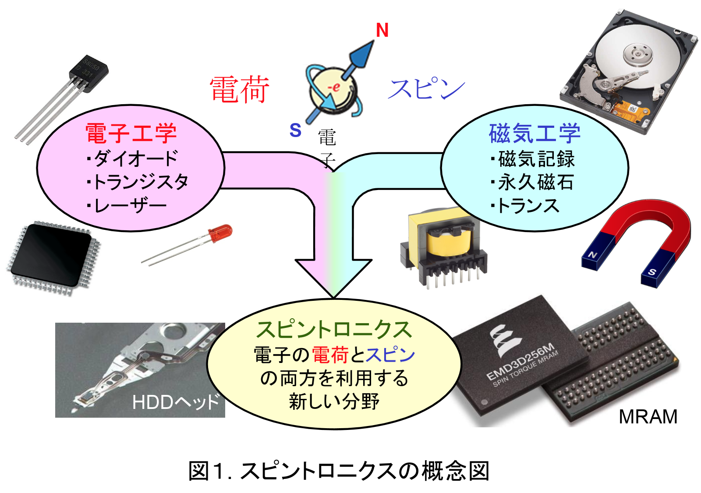
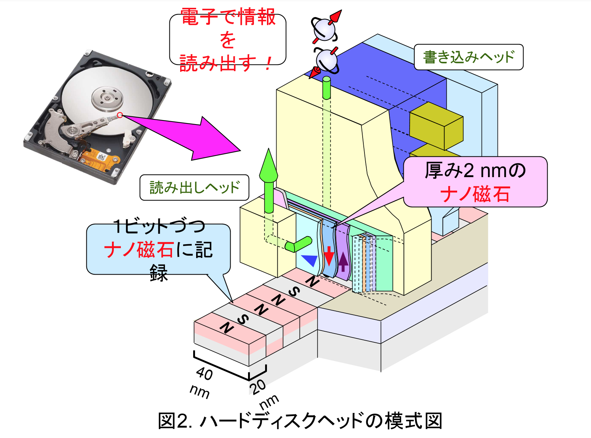

研究内容
スピントロニクスとは、従来別個に発展してきた、磁性体の性質を応用する磁気工学と、電子の伝導特性を応用する電子工学、の両方の分野の利点を兼ね備え、電子が持つ電荷とスピン（磁性の源）といった２つの性質を同時に利用して新しいデバイスを開発しようとする学問分野です。
近年､ハードディスク（HDD）再生ヘッドやMRAM、Spin-RAMなど、スピントロニクスを応用したストレージ・メモリ技術が著しい発展を見せています｡磁気抵抗（MR）効果は、これらのスピントロニクスデバイスを支える重要な物理現象であり、磁場の大きさや向きによって素子の電気抵抗が変化します。
我々の研究室では、この磁気抵抗効果を中心に、新たなスピントロニクス材料の開発を目指す研究を行っています。
例えば、現在の面記録密度（～1 Tbit/inch2）のHDDの記録ビットサイズは15 nm×45 nm程度ですが、更なる高密度化により、薄膜金属粒径（～10 nmφ）程度の大きさとなることが予想されています。このような微細な記録ビットからの磁気信号を再生する素子は、当然結晶粒径程度のサイズとならざるを得ません。ところが、これまでに応用されてきた巨大磁気抵抗（GMR）や、トンネル磁気抵抗（TMR）薄膜といった材料は、異種材料の人工積層構造から成っており、もはやその厚み（～20 nm）が再生ヘッドのシールドギャップに収まらない問題も生じています。これらの問題を根本的に解決するためには、単層極薄の単結晶薄膜で大きな磁気抵抗変化率（MR比）を実現できる新たな素子・材料を開発することが不可欠になっています。このような要請に応えるような新たな磁性材料の開発と、その実現のための物理現象の理解について研究をしています。